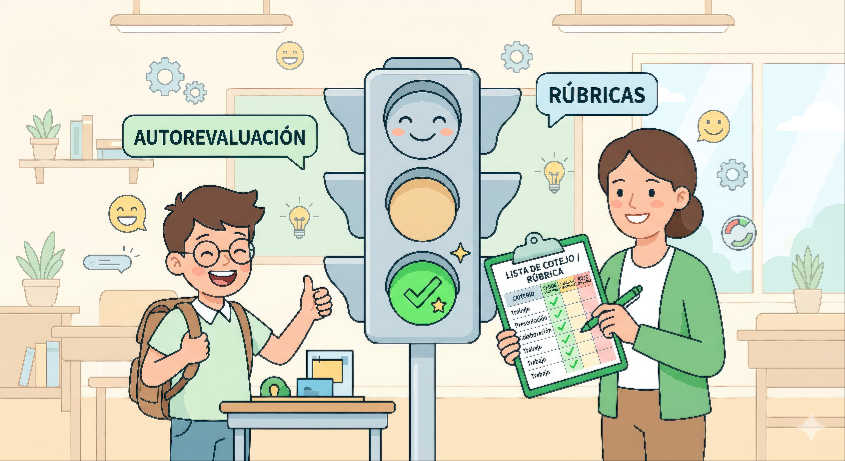

Texto
¿CÓMO EVALUAREMOS NUESTRO TRABAJO?
Utilizaremos una evaluación formativa que valora tanto el proceso práctico diario como tus impresiones personales:
1. Rúbrica de Observación del Maestro
| Dimensión | Nivel 3: Autónomo | Nivel 2: Con apoyo | Nivel 1: En inicio |
|---|---|---|---|
| Lógica laboral (Robótica) | Ordena las fichas físicas de MatataLab o programa Codey Rocky sin ayuda. | Realiza la secuencia tras recibir apoyo verbal o modelado físico. | Muestra dificultades graves para comprender el orden de los pasos lógicos. |
| Autonomía digital (Web) | Navega por Symbaloo solo y completa la plantilla de Google Sites. | Necesita indicaciones paso a paso y la guía de mesa para rellenar. | Requiere que el docente o monitor realice la mayor parte de las acciones. |
| Tolerancia a la frustración | Muestra paciencia ante errores, busca soluciones o consulta la guía visual. | Se frustra temporalmente, pero se calma y continúa tras recibir contención. | Se bloquea o abandona la actividad ante el primer fallo técnico. |
| Seguridad digital | Identifica qué es una foto personal y comprende que no debe subirla sin permiso. | Necesita recordatorios constantes sobre el uso de imágenes seguras. | Sube información o imágenes de forma descontrolada sin privacidad. |
2. Semáforo de Autoevaluación (Tu opinión)
Al terminar las tareas en la tablet, responderás tres preguntas sencillas marcando los colores del semáforo según te hayas sentido:
- 🟢 VERDE (Autónomo): Trabajé solo y terminé / Tranquilo y contento / Me gusta mucho mi trabajo.
- 🟡 AMARILLO (Con apoyo): Necesité un poco de ayuda / Nervioso, pero continué / Me gusta un poco.
- 🔴 ROJO (Frustración): Me costó mucho / Me bloqueé / No me gusta nada. (Si marcas rojo, nos reuniremos para hacer la actividad más sencilla).

José Lopera Muñoz (vía IA Gemini). Un alumno sonríe junto a un semáforo en verde mientras una profesora escribe en una lista de evaluación. (CC BY-NC-SA)